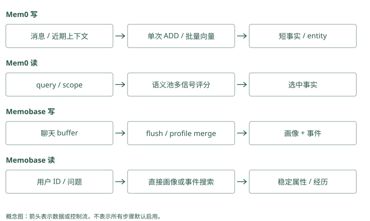

事实与画像路线：Mem0 / Memobase
同一位用户，两种不同的问题
Alice 在几次聊天里说过：默认中文、Atlas 默认预发布、上周发布漏了迁移检查。今天有两个问题：“怎样称呼和回答 Alice？”以及“Atlas 上周为什么失败？”
第一个问题需要稳定用户属性，第二个需要具体经历与证据。Mem0 和 Memobase 都能保存文字信息，但它们把整理工作放在不同位置。用同一段输入走一遍，就能理解这种差别。
下面的记录形状都是便于学习的示意，不是接口返回保证。真实函数入口和版本说明保留在本章实现笔记中。
Mem0：问“平时用什么语言”，取“默认中文”；问“上次为何暂停发布”，搜索那次迁移检查记录。两次读取要找不同内容。
Graphiti：语言偏好连到 Alice，失败经历连到那次发布任务。查偏好不必读取故障报告，查故障也不能只看 Alice 的简介。
源码与边界（选读）
Alice 的资料可以分成当前默认和具体经历。Mem0 的 user scope 读作“属于这个用户的存取范围”，里面仍有许多不同用途卡片；Graphiti 则将 Alice、Atlas 等对象分开。回答用什么语言，应看 Alice 的默认；发布为何失败，应看 Atlas 的经历，不应把范围相同误认为所有内容都相关。
Mem0：同一个 user scope 不意味着所有事实都该出现
默认语言适合直接读取审核后的稳定记录，失败原因适合 query 搜索。普通事实池可以表达两者，但没有自动把语言整理成唯一 profile 字段。应用先决定读哪类内容，再选择 get、get_all 或 search，避免以发布查询的相似度决定沟通偏好。
Graphiti：用户属性与项目经历需要不同主体
语言偏好可以关联 Alice，发布失败关联 Atlas 与对应事件，两者共享来源却不应共享关系范围。以 Alice 为中心找偏好，以 Atlas 为中心找发布资料，读取时仍限定可见组。图把对象区分开，前提是写入正确解析了主体。
Mem0：先形成卡片，再按问题挑选
应用把聊天消息和可信用户范围交给 add()。Mem0 当前本地推断路径先参考近期消息和召回到的已有记忆，再请模型提取新增事实。近期消息帮助解释“以后都这样”里的“这样”，旧记忆帮助避免重复抽取。
理想的教学结果像三张卡片：
M1：Alice 默认用中文沟通。
M2：Atlas 默认部署到预发布。
M3：用户报告上周 Atlas 发布漏了迁移检查。这些卡片批量生成 embedding，存入后端，并维护文字、时间等信息。文本 hash 检查完全重复，实体链接把 Alice、Atlas 等对象连到相关记忆 ID。批量处理减少逐条请求的开销，但模型仍可能提取错，应用仍要检查来源与输出。
今天问“Atlas 上周为什么失败”，search() 先取多一些语义候选，再利用关键词和实体匹配给这个池里的记录加分。M3 可能因“发布失败”的意思与 Atlas 对象更相关而排高，M1 不应只因为是同一用户就占据主要输入。
搜索结果还不是模型回答。应用需要把选中的正文和来源放进当前输入，并让模型区分“用户报告”和“已验证原因”。如果不做这次组装，SDK 存得再好，回答也看不到。
Mem0：输入“我喜欢中文，Atlas 用 PostgreSQL，发布前查迁移”。整理成三条记录。问数据库时取 PostgreSQL 那条，问发布要求时取迁移那条。
Graphiti：同一句话分别记录 Alice 的偏好、Atlas 的数据库和发布要求。每条关系保留出处，方便检查用户与项目的属性有没有混在一起。
源码与边界（选读）
假设提取器写出 M1、M2、M3，程序要逐条保留正文，再为它们生成搜索用数字。一批写入表示集中处理这些记录，能减少请求次数，却不保证一个失败会撤销全部成功。Mem0 还维护历史与对象关联；Graphiti 对同样原话则维护材料、对象与关系。返回三项时，要确认是哪三种对象，不能只比条数。
Mem0：卡片从模型输出走到两种持久状态
提取 JSON 的 memory 列表后，embed_batch() 为全部有效 text 生成向量。构造 records 时加入 hash、词形和 metadata，批量 insert 写事实，再 batch_add_history() 记录 ADD。接着跨本批事实汇集唯一实体，为实体生成向量并查找已有对象，更新关联 ID。失败时逐条回退或跳过，所以结果应分别核对事实和辅助索引。
追一次 Mem0 调用的输入、内部形状与输出
下面仅展示已配置 Memory 对象的调用，真实 m 的创建需要选择 LLM、embedding 和 vector store。不要用未声明的模型配置去运行这段代码：
messages = [
{"role": "user", "content": "默认用中文。"},
{"role": "user", "content": "Atlas 今后默认预发布，今天演练仍用测试。"},
]
written = m.add(
messages,
user_id="alice",
metadata={"project_id": "atlas", "source": "session-42"},
)
found = m.search(
"Atlas 默认部署环境",
filters={"user_id": "alice", "project_id": "atlas"},
top_k=5,
explain=True,
)代码中的 m 是已经接好模型与存储的 Mem0 对象；messages 是输入，written 接收写入结果，found 接收另一轮搜索结果。user_id 指明写入身份，metadata 附来源与项目；搜索时这些条件放在 filters 中。top_k=5 表示最多返回五项，explain=True 请求额外解释评分。先弄清每个变量装什么，再看输出字段。
返回的 written["results"] 表示这次构造的事实结果，形状通常包含 id、memory 和 event；found["results"] 另含搜索评分等字段。它们都不是原始 messages 数组。一次消息可以产生零条、多条事实，而提取器会不会正确拆出长期默认与当天例外，需要检查实际正文。
内部 payload 的教学形状如下，实际值由模型、时间与 provider 决定：
{
"data": "Atlas 今后默认部署到预发布",
"user_id": "alice",
"project_id": "atlas",
"source": "session-42",
"hash": "正文的文本指纹",
"text_lemmatized": "用于关键词索引的规范文本",
"created_at": "本次系统创建时间",
"updated_at": "本次系统更新时间"
}source 和 project_id 来自应用，不是模型验证过的证据。还有一个写入范围细节：普通路径检索既有记忆时，代码从 filters 中抽出 user、agent、run 这几个身份键；不能假设自定义 project_id 同时限定了所有内部上下文和实体索引。若同一个用户有多个同名项目，需测试串线，必要时通过专门 agent scope、实例隔离或外层提取保证边界。
正常写入还把近期消息保存到 SQLite，下一次用于解释“以后都这样”。然而每张卡的 source 不会自动细化到 messages 中哪一句；多来源批次可以由应用拆开、维护事实到原事件的映射，或核验后补来源。缺少这一步，source 指向整个会话只提供粗粒度回查，不能证明具体陈述出自哪次观察。
Graphiti：相同消息被拆成对象与关系
Graphiti 先创建 episode，解析 Alice、Atlas 等节点，然后抽取“偏好语言”“默认环境”“失败报告”等关系。规范节点 UUID 修正边端点，边 resolution 返回重复、新增和失效集合。summary 只使用新关系参与更新，最终保存 episode 与关联。它保留关系语义，但写入比生成三张短卡片涉及更多判断。
一个细节：Mem0 没看见的卡片不会被关键词救回
假设 M3 没有进入语义候选池，关键词搜索即使发现它很匹配，当前 _search_vector_store() 的池边界仍可能使它不返回。这里的关键词和实体主要给已有池加分，并非一定把各路独立命中合成完整并集。
你可以用一个只含精确错误码、但语义相似度不高的例子检查这个边界。对比 MCP 的全文与向量候选并集，就能看出“都叫 hybrid”不代表同样的漏召回模式。先观察候选 ID，再考虑换评分权重。
Mem0：正确的 E42 记录没进第一批候选。即使含准确错误码，后续加分也碰不到它；应用应先修初选，而不是不断提高关键词权重。
Graphiti：E42 的关系可由文字搜索单独找到，再参与合并。仍要检查项目范围和最终名次，不能因为某一路能搜到就认定一定会返回。
源码与边界（选读）
把 boost 读成额外加分：一张候选卡谈到 Atlas，查询也谈到 Atlas，它可以得到奖励。但若 M3 根本没被纳入 Mem0 的第一批，给相关对象加分仍可能没有它的位置。Graphiti 的独立全文路可能将这条失败关系找回来，前提是失败信息确实存在于被索引的关系正文。
Mem0：实体 boost 也无法补回 M3
_compute_entity_boosts() 找查询实体关联的 memory IDs，并按匹配相似度和实体关联数量计算 boost。关联特别多的泛化实体会减弱影响。最终 candidates 仍来自 semantic results；M3 仅被 Atlas 实体命中，也未必输出。测试时同时记录三种信号的 ID，而非只看最终 score。
Graphiti：独立全文路可补向量遗漏
edge RRF 配方同时取全文和 cosine 候选，全文单独找到的失败边可以进入 UUID 并集。若只找到 Atlas 节点，基础边查询仍未完成，应使用组合配置或另查节点周围关系。Graphiti 增加可达路径，但不保证任何缺失事实都能被图救回。
Memobase：提前整理用户资料，经历另放事件
Memobase 先收下聊天 blob，也就是一份原始输入内容，把它放进该用户和项目的 buffer。Buffer 是待处理区，flush 是开始处理这批内容的动作。
处理时，模型从聊天提取候选属性，结合旧 profile 整理和合并，再形成事件信息。学习时可以想成一张资料页和一个事件列表：
资料页：Alice，沟通语言=中文。
事件：上周 Atlas 发布漏检，来源为当时聊天。问怎样回答 Alice，应用按用户 ID 读取短画像，不需要让一次近邻搜索决定“中文”有没有被挑中。问上周失败经过，再搜事件。它把部分理解工作前移到写入阶段，以换取更确定的稳定属性读取。
若 Alice 刚说“今后默认英文”，而 buffer 还没有 flush，长期资料页可能暂时仍是中文。本次模型输入应直接包含这条新消息。最终一致性就是这种“保存成功与整理结果可读之间存在窗口”的情况，不表示系统必然丢了数据。
Mem0：Alice 说“中文沟通，按上海时间，我偏好 PostgreSQL”。分别存三条，应用读取当前值，显示“中文、上海时间、PostgreSQL”；资料页由应用组装。
Graphiti：分别记“Alice→语言→中文”“Alice→时区→上海”“Alice→偏好数据库→PostgreSQL”。应用选当前关系展示；她以前偏好 MySQL，不代表现在同时偏好两个数据库。
源码与边界（选读）
缓冲区像待整理的一摞输入，flush 表示开始把它们整理成可读状态。Mem0 的普通 add 没有因此成为画像合并服务；Graphiti 读取前序材料是给提取器参考，也不表示这些材料仍在排队。要解释“刚说英文却还读到中文”，分别检查输入接收、整理完成和读取缓存三个时刻。
Mem0：没有 buffer flush 合并画像的同等协议
近期消息用于解释新增事实，历史库保存消息，但普通路径没有 Memobase 的用户 buffer 状态机。AsyncMemory 也只是异步调用形式。若应用想批处理偏好，应自行聚合消息、控制顺序和完成状态，再决定追加或显式修改稳定记录。
Graphiti：previous episodes 提供理解上下文
retrieve_episodes() 在限定 group 和时间下获取前序材料；调用者也能提供 previous_episode_uuids。它们帮助解释省略表达，不等于正在等待 flush 的消息队列。episode 的抽取完成状态和近期未处理消息，仍需由宿主编排。
两种路线怎样处理同一句例外
旧偏好中文，新消息“这封邮件英文”。Mem0 应提取有“这封邮件”边界的候选，不把它和长期中文默认简单混合；Memobase 的合并也应保留中文字段，将英文作为本次任务或事件。模型如果误解，两条路线都会犯错，只是错误放在不同结构里。
对“今后默认英文”，Memobase 可以形成新的当前字段；Mem0 的追加路径可能保留中文和英文两条事实，让读取时解释变化。需要历史查询时，不能仅凭新字段或最新创建时间，要补适用日期和来源。
MemoryOS 用访问热度等条件决定画像提升，Letta 让 Agent 编辑常驻用户记忆，Graphiti 可以把偏好表达为带时间关系。它们共享“稳定属性应可靠出现”的目标，但触发更新的机制不同。
Mem0：已有“默认中文”，新话是“这封邮件英文”。应用把英文要求限定在这封邮件；写完后，下一次普通回答仍用中文。
Graphiti：英文要求连到邮件任务，中文偏好连到 Alice。只有“以后默认英文”这种长期变更，才应处理语言偏好的有效区间。
源码与边界（选读）
“这封邮件英文”可以对应任务 T1，“以后英文”才改变用户默认。Mem0 存成文字卡片时要保留 T1 限定，不覆盖中文默认；Graphiti 可将任务需求和长期偏好表达为不同关系。关系结束或卡片替代之前，要先证明新话改变的是同一个默认字段，而非另一个场景。
Mem0：一次例外追加，永久变更需指定策略
“这封邮件英文”应保留任务限定，不能 update 长期中文卡片；“今后英文”可以产生新默认候选。应用确认后可替代当前视图，保留变更日志。仅用 latest created_at 选择会把补录与单次例外混入，需明确业务生效时间。
Graphiti：同一用户也可以有情境化偏好
中文默认与邮件英文可以分别连用户默认和任务需求，不应互相失效。新长期英文关系才可能结束旧中文关系。自定义 schema 允许表示任务节点或限定属性，随后核对被 invalidated 的边，确保结束的是默认关系而非所有中文使用记录。
从下一次读取，反推事实库和画像库的代价
Alice 的默认语言几乎每轮都需要。用事实库时，应用必须保证这条偏好参与读取：可以搜索，也可以用固定类型和身份直接取。若所有内容都只按当前问题搜索，“Atlas 迁移检查”可能与“默认中文”没有足够相似度，偏好就会漏掉。问题不在于事实库不能保存语言，而在于应用选错了读取方式。
画像库提前把语言归入一个字段，生成前按 Alice 的身份取当前值，减少了这类遗漏。代价则转移到了字段更新：当模型把“这封邮件英文”错误合并进去，之后每轮都会读到错误默认。事实库的错误可能只在特定查询下出现，画像错误可能持续影响全部对话。读取越确定，写入的核验越值得投入。
还需要考虑未完成的整理。Alice 连续发两条消息，先说“今后英文”，又说“算了，仍然中文”。如果后台处理分批、重试或乱序完成，当前字段不能仅凭最后完成的任务更新。应用需要检查处理顺序或版本，确定最终值对应最新有效表达。这里讨论的是接入时应验证的行为，不代表 Memobase 的每种部署都已解决这一问题。
Mem0：应用已确认 17 号记录是当前语言偏好，每轮按编号读取它。发布问题再单独搜索教训，避免“发布”这个问法漏掉“中文”。
Graphiti：应用先定位 Alice，再读取她当前的语言关系。若把“语言”只放在模糊简介里，每次仍要猜哪句话是现行偏好。
源码与边界（选读）
已知语言卡片是 M1，按编号直接取它，可以避免查询措辞变化使它落选；但 M1 若已改错，每轮都会稳定读错。Graphiti 按用户对象读摘要也有相同风险。确定读取只是保证拿到那个对象，正文正确、日期有效和权限允许仍需另查，尤其是批准人等必须确定的字段。
Mem0：直接读降低漏召回，也放大错误写入
稳定记录 ID 固定后，get() 可避免 query 表达变化造成遗漏；返回前仍要核对所属身份及当前版本。若 update 错了正文，每轮直接读取都会受影响。历史提供回查，应用须有字段核验、版本切换与缓存失效，不应把稳定读取误认为稳定正确。
Graphiti：summary 热读取需要事实校验规则
按已知用户 UUID 读取 summary 可以快速获得个性化入口，却可能含旧属性或过度概括。对语言、环境等必须确定的字段，应读对应有效关系而非随意解析摘要。若缓存 summary，键要包含 group、节点身份与内容版本或受控失效机制。
画像里写什么，才不会越整理越偏
画像适合稳定属性，但“稳定”需要从语义和使用场景判断。用户一天内多次要求英文，可能只是正在写英文邮件；用户只说一次“以后默认中文”，却已经给出明确的长期边界。重复次数能提供线索，不能替代对“这次”“以后”等条件的理解。
假设聊天里同时出现“我偏好简短回答”和“请详细解释这次迁移”。当前任务应得到详细解释，长期字段仍可以保留简短偏好。默认值只在没有更具体要求时起作用。组装输入时，可以明确表达当前任务覆盖一般默认，避免模型把画像当作不可改变的命令。
画像也可能包含未知状态。Alice 没说过部署环境，就不应为了填满 schema 推断她偏好预发布；同名用户的记录也不能补过来。读取端收到空字段时，可以使用应用默认或请求澄清，并标明这不是已知的个人偏好。结构化字段让数据更容易读取，也会让猜测看起来更像确定事实，因此空值有时比流畅的补全更准确。
对于 Atlas 的失败经过，画像只能提供入口，不能代替事件证据。即使有字段“发布需检查迁移”，用户追问“上周为什么失败”时，仍要回到那次事件，区分报告、猜测和工具验证。两条路线可以配合：稳定属性直接读取，任务经历按问题搜索，最后在一个组装位置合并，并保留各自来源。
Mem0：Alice 从没说喜欢测试环境，应用只是为安全选了测试。不能存成“Alice 偏好测试”；应把应用默认与用户表达分开。
Graphiti：没有用户来源，就不建立“Alice 偏好测试”的关系。这次任务实际用了测试环境，也不能证明长期偏好。
源码与边界（选读）
Alice 没说默认环境时，应用可以使用自己的测试环境默认，但应标注为应用规则。不要把它填成 Mem0 的用户事实，也不要让 Graphiti 抽成 Alice 的偏好边。未知表示没有证据，不是整理失败；允许空值和请求澄清，比用一个看似完整的字段掩盖猜测更容易纠正。
Mem0：缺失偏好不能靠结构默认伪造
候选未提及部署环境时，不应由应用为 metadata 补一个看似用户事实的值。业务默认可以另标来源。对“简短回答”与“本次详细讲解”，assembler 明确当前要求优先，SDK 搜索没有自动解决偏好与指令优先级。
Graphiti：属性抽取应允许未知与情境
用户 schema 定义字段，并不要求模型从没有证据的聊天猜出值。节点属性和偏好边应保留来源与限定，任务细节不要直接压进永久 summary。抽样比较 episode、属性、fact 和 summary，可发现同一次猜测在多层被写成确定值。
动手检查
准备三轮输入：“默认中文”“这封邮件英文”“今后默认英文”。每轮写下期望的稳定语言字段、单次任务约束和历史证据。再分别思考 flush 前后和追加事实库里的结果。
答案提示：前两轮长期默认仍中文，第三轮才改英文；第三轮发生前的历史仍应能解释。Memobase 的原 blob 是否保留取决于配置，不能只因为有 profile 就假设总能回看原话。
实现笔记与源码对照（选读）
事实库把长对话转换成可搜索的短陈述；画像库把稳定属性整理成能直接读取的字段。两者都可能使用 embedding，但读取路径不同：问“上次为什么改部署方式”需要检索证据，问“用什么语言回答这个用户”通常只需要按用户 ID 读取画像。
本章按本地源码快照解释行为。下文的部署偏好例子用于教学，不是项目 benchmark，也不表示项目默认具备完整时间审计。
Mem0：给应用增加通用记忆层
Mem0 提供同步和异步 add/search/update/delete 等接口，通过 factory 选择 LLM、embedding、vector store 和 reranker。应用在一轮对话后提交消息，在下一轮生成前搜索记忆，再把返回的文本放进自己的 prompt。SDK 负责记忆处理，应用仍负责可信身份、授权和最终上下文组装。
一次 add 实际做了什么
本地 mem0/memory/main.py 的 _add_to_vector_store() 已采用注释所称的 V3 phased batch pipeline。不能再把当前 OSS 简化成“模型每次决定 ADD/UPDATE/DELETE”，也不能因为 README 的 benchmark 属于托管平台，就推断 ADD-only 只在云端存在。
消息 + user/agent/run scope
→ 读取近期消息、检索同作用域既有记忆
→ 单次 LLM 生成新增事实
→ 批量 embedding
→ 文本 hash 去重、生成 metadata
→ 批量写向量与历史
→ 抽取实体、建立实体到记忆 ID 的链接
→ 保存消息上下文近期消息用于解释“那个环境”“以后都这样”等省略表达，既有记忆帮助模型避免重复抽取。代码先把既有记忆 UUID 映射为短整数标签，减少模型编造 ID 的机会；这是一种输出约束，不能替代事实核验。
提取结果不是一整段聊天摘要，而是一组带 text 的记忆。代码批量生成向量，并将 data、用于 BM25 的词形归一文本、hash、时间以及可能的归属信息放进 payload。hash 去重覆盖本批次和已召回记录，因此是局部、精确文本去重，不等于扫描全库，也不能识别所有同义句。
实体链接另建实体存储：抽取实体后按规范化文本和相似度寻找已有实体，再维护 linked_memory_ids。比如“Atlas 项目迁到 Kubernetes”和“Atlas 的发布前检查需要更新”，可以通过 Atlas 聚合候选，不必要求两条事实与 query 都高度相似。这个实体索引不应被误称为 Graphiti 那种带时间关系边的知识图谱。
infer=False 走另一条路径：跳过系统消息，直接把各条有效消息 embedding 后写入，保留 role 和 actor 元信息。它适合应用已完成筛选的输入，但跳过提取也意味着应用要承担噪音控制和敏感数据检查。
search 如何使用三路信号
search() 接收过滤条件，读取路径组合向量、BM25 和实体信号。向量抓住“部署平台”和“运行容器的方式”的语义联系；BM25 抓住 Atlas、Kubernetes 等字面词；实体链接把 query 指向的对象映射到相关 memory IDs，提供评分 boost。可配置 reranker 对 query 与候选重新评分，但它不会补回从未进入候选的事实。
一个重要实现细节是：本地 _search_vector_store() 的最终 candidate set 来自 over-fetch 后的 semantic results，keyword 与 entity 信号用于给这个集合评分，并非三路候选直接取并集。若一条记忆只被 BM25 命中而没进入语义池，当前路径可能不会返回它。README 的“三信号融合”不能自动理解成完整的三路独立召回，排查漏召回时要检查这个候选边界。
应用必须检查所选后端的全文能力与实际降级路径，不能仅凭三路算法说明，就假设所有 vector store 配置返回相同结果。用户、Agent、run 的过滤条件也不是登录认证：客户端能传入 user_id，不意味着它有权代表该用户访问。
用偏好变化理解 ADD-only
用户先说“Atlas 默认发到测试”，后说“以后 Atlas 默认发到预发布”。ADD-only 保留新事实，不让提取模型在这一步删除旧事实。旧陈述仍可能被召回，读取时需要结合时间和语境判断当前默认值。
仅有 created_at 不足以证明现实生效时间。补录旧消息、预告未来变更、一次性例外都会使“最近写入就是现在有效”出错。需要严格回答“当时默认在哪”时，应用应额外定义 valid time 与 supersession，或采用下一章的时间图谱。Mem0 显式提供更新、删除接口，也说明“抽取采用追加”不等于“用户数据永远不可删除”。
成本、失败与开源边界
一次推断写入包含 LLM 提取、query embedding、候选搜索、新事实 embedding、持久化和实体处理。批量接口摊薄调用开销，不能消除模型成本。源码在部分 embedding、插入和历史写入失败时逐条回退，提取调用失败则会抛出 LLMError；生产应用应分别处理“没有新事实”和“依赖不可用”，并检查多存储之间的部分成功。
2026 README 的 92.5 LoCoMo、94.4 LongMemEval 等数字来自包含专有优化的 managed platform。当前 OSS 已有若干同方向机制，仍不能从机制相似推出分数相同；时间推理、后端优化和线上服务能力需要分别验证。
它适合通用聊天、客服个性化和希望少改业务代码的应用。试用至少覆盖同义重复、偏好变化、主体串线、显式删除和提取失败五类输入，记录真正写入的事实与实际送进 prompt 的内容。
Memobase：把用户画像放在读取热路径
Memobase 以用户 profile 与 event timeline 为中心。画像保存相对稳定的属性，事件保存发生过的事情。用户说“平时喜欢素食，周五和同事去了一家川菜馆”，长期偏好与单次活动应进入不同结构，避免把一次吃饭推断成永久口味。
buffer 如何降低在线写入成本
源码入口是 controllers/buffer.py。消息先作为 blob 保存，buffer 记录 blob ID、用户、项目、类型、token 数和状态。达到容量阈值、后台空闲条件或显式 flush 后，系统才把同一作用域内的聊天按时间取出处理。
原始 blob
→ 用户/项目 buffer：idle
→ flush：processing
→ 聊天处理：画像提取、整理/合并、事件摘要
→ 更新 profile 与 event
→ done；失败则 failed这把多数模型工作移出了每轮回复热路径，也提供了失败状态。代价是最终一致性：刚说出的偏好在 flush 前可能尚未进入 profile，当前会话仍需保留近期消息。多个 worker 同时 flush 同一用户还需要锁或幂等键，本地源码明确留有并发重复 flush 的 FIXME，不能把状态列当成完整并发控制。
画像提取与合并怎么工作
controllers/modal/chat/ 下的 extract.py、organize.py 和对应 profile prompts 把信息按 topic/subtopic 组织。提取阶段从聊天得到候选事实，整理与合并阶段结合既有画像，决定哪些属性重复、补充或需要改变。schema 帮助应用限定关注哪些维度，但模型仍可能把暂时状态错当长期属性。
设旧画像是“沟通语言：中文”，新聊天是“这封邮件用英文”。合并策略应保留中文长期偏好，并把英文记录为这次任务约束。若新聊天是“今后默认英文”，才有长期更新的证据。这里的更新发生在 profile 字段，查询无需每次找回所有原话；高风险应用应为字段额外保存证据引用。
为什么画像直接读取，事件另行检索
构造个性化 prompt 时，应用按用户获取 profile，把语言、长期目标和稳定偏好作为短上下文。问“周五见了谁”则走 event timeline，结合时间、标签和语义查活动摘要。这样不必让一次近邻搜索决定最基本的用户属性是否出现。
这是一种读写不对称：离线写入愿意花成本整理结构，在线读取尽量走少量数据库查询。README 的低于 100ms 热读取、固定三次 LLM 调用及成本下降约 40% 至 50% 是特定版本的项目自报结果，不是每种配置的延迟保证；事件搜索也不能套用 profile 直接读取的数字。
保留与维护的限制
flush 成功后，若 persistent_chat_blobs 关闭，代码会删除原始聊天 blob。它节省空间，也会削弱原文审计与重建能力。不能把本书建议的“始终保留来源直到保留期结束”误写成项目默认行为，部署时要明确配置和隐私策略。
本地维护快照最后提交为 2026-01-11，近 90 天无提交。它适合研究陪伴、教育、销售等画像密集应用的模型，但作为生产依赖，需要考虑 fork、并发补强、安全维护与数据导出。
两种路线的关键差别
Mem0 把应用交来的消息转换成通用可搜索事实，读取时由 query 和多路索引选择内容；Memobase 优先整理用户结构，稳定属性直接获取，具体经历再检索。前者的主要风险是候选噪音与时间消歧，后者的主要风险是画像合并错误、更新滞后和丢失原文。不要用同一个 top-k 指标评判两者：应分别测事实召回与字段正确率，再看最终个性化任务是否改善。
同样保存偏好，其他项目怎样做
MemoryOS 不在每次读取前按用户全量 flush，而是短期容量触发中期组织，热段达阈值后分析未处理 pages，更新完整 profile。反复表达稳定偏好可能提升，一次较冷但重要的明确纠正则可能受阈值影响，当前会话要直接携带这条信息。Memobase 的阈值用于批处理，MemoryOS 的 heat 用于进一步提升，它们不是一个参数。
TencentDB 从 L0 抽取 L1，再归纳 L2 场景和 L3 core；生成 prompt 的绑定与版本决定关注点。稳定偏好应限定 team/agent/user 和适用情境，不能把某个任务内“英文邮件”扩成团队默认。Letta 由 Agent 自己把稳定偏好写进 core、详情放 deferred，commit 后重新编译；它减少每次偏好检索，却增加 self-edit 的正确性责任。
MemOS 当前 cube 可以启用 preference memory 模块，与 text/act/para 配置分开；最终怎样获取和注入仍依 backend 与宿主，不应把一个模块名当作完整 Memobase profile schema。Graphiti 则可把“用户偏好语言”表达成实体属性或关系，适合连接与变化追踪，但需要检索/时间筛选，并非同样的直接字段热读取。
Basic/Hippo/文件规则也能保存偏好，Cognee 可以经 schema 或 preference 相关管线组织个性化知识，MCP 可以存带类型内容；这里应明确表示“能够表达此内容”，不是“已自动实现同一种画像合并”。A-MEM、HippoRAG 的笔记/文档结构同样可以含偏好文本，但不据此称为画像优先产品。Beacon 和 Hermes 分别只提供输入证据与读取选择。

项目对照速查（选读）
本章对照结论
| 项目/实现 | 偏好怎样进入稳定视图 | 在线访问 | 与 Memobase 不同的责任 |
|---|---|---|---|
| Mem0 | 推断 add 为新增短事实 | query 多信号评分 | 多条偏好需时间/语境消歧 |
| Memobase | 用户 buffer flush、topic/subtopic merge | profile 直接读、event 搜索 | 原文保留与并发 flush 配置 |
| MemoryOS | 热中期 pages 分析为完整 profile | 长期画像加多层知识召回 | heat/promotion 与冷纠正可见性 |
| TencentDB | L0/L1 到场景/core、prompt 版本 | Proxy 高层注入/低层工具 | scope/资产与生成溯源 |
| Letta Code | Agent self-edit core/deferred | core 编译常驻，详情主动读 | commit/recompile、规则评审 |
| MemOS | 可选 pref/text module | 依 backend/宿主组织 | 模块选择不等于固定字段协议 |
| Graphiti | entity/edge/summary 中组织偏好 | 图/全文/语义与时间筛选 | 实体消歧和边失效 |
| Cognee | schema/typed entries/个性化管线 | 按配置 recall | 路由与反馈设置需要核对 |
| Hippo、Basic、MCP | 偏好内容存为本地记录/笔记/typed memory | 检索或显式读取 | 由应用定义稳定属性与合并规则 |
| A-MEM、HippoRAG | 笔记/文档可表达偏好 | 关联检索 | 不能只因有文本就称画像服务 |
| Beacon、Hermes | trace 或判别候选 | 供下游提取/选择 | 不维护用户画像 source of truth |